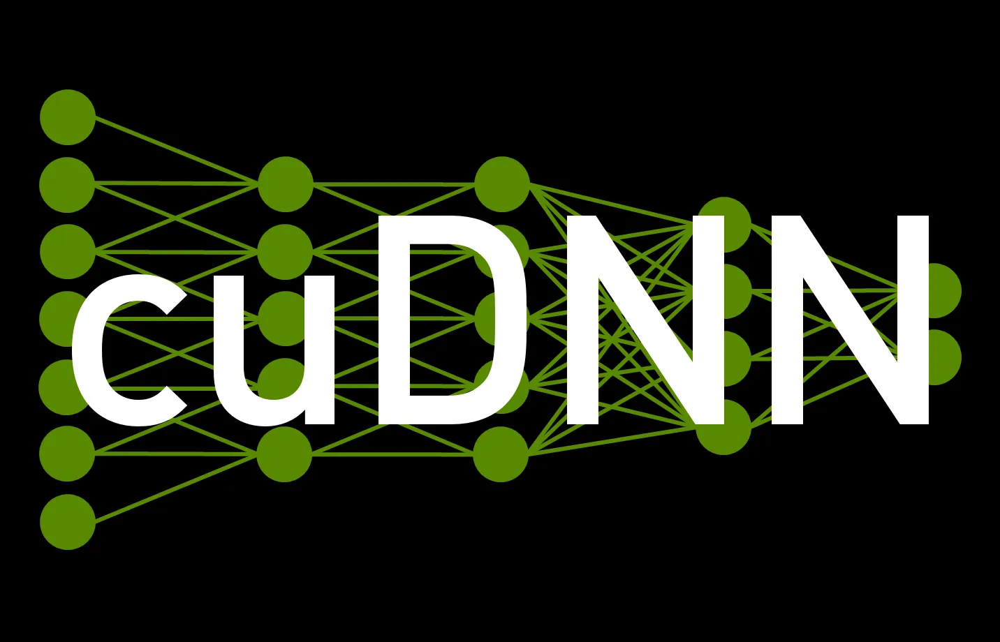

Home Blog Index Kimaru Boruett, December 2024

I’ve had my RTX 2060 and Razer Chroma X eGPU for a while now, but I haven’t fully tapped into its potential until recently. Over the past couple of hours, I’ve been experimenting with CUDA sample CLI programs and successfully installed cuDNN. In this blog post, I’ll walk through a simple example that demonstrates the core operations of training a basic convolutional neural network using NVIDIA’s cuDNN library. For context, I’m working on a Lenovo X1 Carbon Gen 6 running Ubuntu 24.04 and an eGPU. If you’re interested in the installation process for both CUDA and cuDNN, feel free to ask in the comments. After some trial and error following NVIDIA’s online documentation, I was able to get CUDA 12.6 and cuDNN for CUDA 12 up and running.
cuDNN is a GPU-accelerated library by NVIDIA designed to provide high-performance primitives for deep learning applications. It is widely used in frameworks like TensorFlow and PyTorch, offering optimized operations like convolutions, pooling, and activation functions. By leveraging cuDNN, you can accelerate training and inference of deep neural networks on GPUs, achieving significant speedups compared to CPU-based processing.
The link to the full code has been provided at the end of this article. The code initializes a cuDNN context, sets up tensors for input/output data, creates a convolutional layer, and demonstrates the forward and backward passes. An important point to note is that the code is not a preview of the full training pipeline, it is meant to verify that cuDNN works. I will highlight what it does and the key snippets
Here, we create a cuDNN handle (cudnn) using
cudnnCreate. This handle is essential as it acts as the
main context for all cuDNN operations. The checkCUDNN macro
ensures we handle any errors during initialization.
cudnnHandle_t cudnn;checkCUDNN(cudnnCreate(&cudnn));In cuDNN, tensors are described using tensor descriptors. In this
step, we create a descriptor for the input data (a 5x5 image with a
batch size of 1 and 1 channel) and define its format using
cudnnSetTensor4dDescriptor. The descriptor tells cuDNN how
to interpret the input data, including its dimensions and layout.
int batch_size = 1, channels = 1, height = 5, width = 5;cudnnTensorDescriptor_t input_descriptor;checkCUDNN(cudnnCreateTensorDescriptor(&input_descriptor));checkCUDNN(cudnnSetTensor4dDescriptor( input_descriptor, CUDNN_TENSOR_NHWC, CUDNN_DATA_FLOAT, batch_size, channels, height, width));cudnnTensorDescriptor_t output_descriptor;int output_height = 3, output_width = 3; checkCUDNN(cudnnCreateTensorDescriptor(&output_descriptor));checkCUDNN(cudnnSetTensor4dDescriptor( output_descriptor, CUDNN_TENSOR_NHWC, CUDNN_DATA_FLOAT, batch_size, channels, output_height, output_width));3. Creating the Convolution Layer
This snippet sets up the convolution filter. In this case, we use a
3x3 filter with one input and output channel.
cudnnSetFilter4dDescriptor defines the filter’s dimensions
and data type.
cudnnFilterDescriptor_t filter_descriptor;checkCUDNN(cudnnCreateFilterDescriptor(&filter_descriptor));checkCUDNN(cudnnSetFilter4dDescriptor(filter_descriptor, CUDNN_DATA_FLOAT, CUDNN_TENSOR_NHWC, channels, channels, 3, 3));4. Defining the Convolution Operation
The cudnnCreateConvolutionDescriptor function defines
the convolution operation’s parameters. We specify valid
padding (0 padding), a stride of 1, and a
dilation factor of 1. Additionally, we set
CUDNN_CROSS_CORRELATION, which is commonly used for
convolution operations.
cudnnConvolutionDescriptor_t convolution_descriptor;checkCUDNN(cudnnCreateConvolutionDescriptor(&convolution_descriptor));checkCUDNN(cudnnSetConvolution2dDescriptor(convolution_descriptor, 0, 0, 1, 1, 1, 1, CUDNN_CROSS_CORRELATION, CUDNN_DATA_FLOAT));5. Memory Allocation for Input, Filter, and Output
Before we can run the convolution, we need to allocate memory on the
GPU for the input data, filter weights, and output data. Here, we use
cudaMalloc to allocate space on the GPU, with sizes
calculated based on the input dimensions and filter size.
cudaMalloc(&d_input, input_size);cudaMalloc(&d_filter, filter_size);cudaMalloc(&d_output, output_size);6. Forward Convolution Pass
This is the core of the program — the forward pass of the convolution
operation. The function cudnnConvolutionForward applies the
convolution on the input data using the defined filter. The result is
stored in the output tensor. The
CUDNN_CONVOLUTION_FWD_ALGO_IMPLICIT_GEMM algorithm is used,
which is an efficient choice for small filters.
checkCUDNN(cudnnConvolutionForward(cudnn, &alpha, input_descriptor, d_input, filter_descriptor, d_filter, convolution_descriptor, CUDNN_CONVOLUTION_FWD_ALGO_IMPLICIT_GEMM, nullptr, 0, &beta, output_descriptor, d_output));7. Backward Convolution Pass (Gradient Computation)
In the backward pass, we compute the gradients for the filter using
cudnnConvolutionBackwardFilter. This is crucial for
updating the filter weights during training. It calculates the
derivative of the loss with respect to the filter weights, enabling the
model to learn from the data.
checkCUDNN(cudnnConvolutionBackwardFilter(cudnn, &alpha, input_descriptor, d_input, output_descriptor, d_output, convolution_descriptor, CUDNN_CONVOLUTION_BWD_FILTER_ALGO_0, nullptr, 0, &beta, filter_descriptor, d_grad_filter));8. Memory Cleanup
Once all operations are completed, it’s important to release the allocated GPU memory and destroy cuDNN descriptors and the cuDNN handle. This ensures that resources are freed, preventing memory leaks and ensuring optimal performance for future operations.
cudaFree(d_input);cudaFree(d_filter);cudaFree(d_output);cudaFree(d_grad_filter);cudnnDestroyTensorDescriptor(input_descriptor);cudnnDestroyTensorDescriptor(output_descriptor);cudnnDestroyFilterDescriptor(filter_descriptor);cudnnDestroyConvolutionDescriptor(convolution_descriptor);cudnnDestroy(cudnn);Assuming you have CUDA and cuDNN installed correctly, proceed to:
Create and Compile the Code: Save the code into a
.cu file (e.g., basic_training_cudnn.cu). You
can compile it using nvcc (NVIDIA’s CUDA Compiler). Here’s
the command to compile the file:
nvcc -o basic_training_cudnn basic_training_cudnn.cu -lcudnnRun the Program: Once the code is compiled, you can run it on your system using:
./basic_training_cudnnThis will execute the program, and you should see output related to the convolution operation being performed, along with any errors or success messages.
Expected Output:
cuDNN initialization successful.Forward pass completed.Backward pass completed.Memory cleanup successful.This simple example showcases the fundamental steps involved in training a convolutional neural network layer using cuDNN. Although it focuses on a single convolutional layer, the key operations — initializing cuDNN, setting up tensor and convolution descriptors, performing both forward and backward passes, and cleaning up — form the foundation for building more complex deep learning models. I’m truly excited about the potential of cuDNN and look forward to diving deeper into its capabilities as I continue my learning journey.